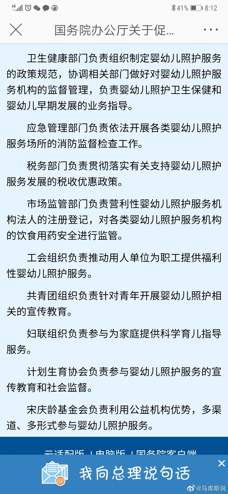

@马库斯说:
国务院办公厅发了关于婴幼儿照护服务的指导意见，我觉得这是一个很好的开端，从现在开始在财政，土地，人力资源准备上，进入战略规划，希望能够看到效果。『国务院办公厅关于促进3岁以下婴幼儿照护服务发展的指导意见（国办发〔2019〕15号）_政府信息公开专栏』 国务院办公厅关于促进3岁以下婴幼儿照护服务发展的指导意见（国办发〔2019〕15号）
国务院办公厅关于促进3岁以下婴幼儿照护服务发展的指导意见（国办发〔2019〕15号）
（三）发展目标。到2020年，婴幼儿照护服务的政策法规体系和标准规范体系初步建立，建成一批具有示范效应的婴幼儿照护服务机构，婴幼儿照护服务水平有所提升，人民群众的婴幼儿照护服务需求得到初步满足。
到2025年，婴幼儿照护服务的政策法规体系和标准规范体系基本健全，多元化、多样化、覆盖城乡的婴幼儿照护服务体系基本形成，婴幼儿照护服务水平明显提升，人民群众的婴幼儿照护服务需求得到进一步满足。
（三）发展目标。到2020年，婴幼儿照护服务的政策法规体系和标准规范体系初步建立，建成一批具有示范效应的婴幼儿照护服务机构，婴幼儿照护服务水平有所提升，人民群众的婴幼儿照护服务需求得到初步满足。
到2025年，婴幼儿照护服务的政策法规体系和标准规范体系基本健全，多元化、多样化、覆盖城乡的婴幼儿照护服务体系基本形成，婴幼儿照护服务水平明显提升，人民群众的婴幼儿照护服务需求得到进一步满足。
- 